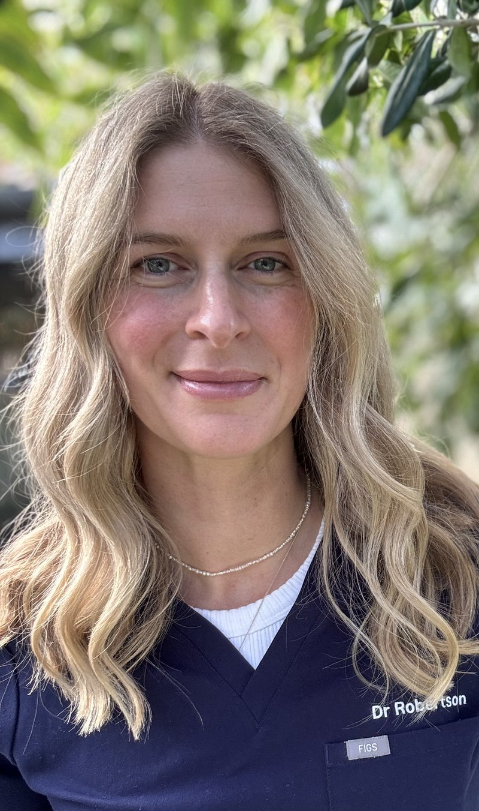

About
BMed(Dist), FRANZCOG, AGES — Gynaecologist, Perth

Dr Pippa (Phillipa) Robertson is a gynaecologist with extended training in complex minimally invasive surgery. She is deeply committed to women's health and takes a collaborative, evidence-based approach to helping her patients address their concerns.
Dr Robertson completed her RANZCOG training at King Edward Memorial Hospital, followed by an additional fellowship through the Australasian Gynaecological Endoscopy and Surgery (AGES) Society in advanced minimally invasive laparoscopic surgery. This expertise allows her to manage complex cases — both medically and surgically — including severe endometriosis, pelvic pain, and other benign gynaecological conditions such as fibroids and ovarian cysts, using minimally invasive techniques.
Pippa has a strong interest in research and is one of the leads of the EndoOrigins Biobank at King Edward Memorial Hospital. She supervises and trains registrars in obstetrics and gynaecology, and provides education to physiotherapists and nursing staff. Pippa coordinates numerous workshops, including the Foundations of Surgery Workshop for obstetrics and gynaecology registrars, and is a facilitator on the well-known Anatomy of Complications course held at CTEC.
Pippa is a kind and compassionate doctor who takes the time to listen to you and empower you. She maintains strong, collegiate relationships with physiotherapists, colorectal surgeons, pain specialists, general practitioners and dietitians to provide holistic care tailored to your needs. Her goal is to work alongside her patients to develop individualised treatment plans that align with their needs and goals.
Philosophy of Care
"My goal is to work alongside my patients to develop individualised treatment plans that align with their needs and goals."
Every treatment plan is developed together — grounded in current evidence, shaped by your circumstances and goals, and explained in plain language so you can decide with confidence.
Hospitals
Nedlands — consulting rooms are located on the Hollywood campus at Hollywood Medical Centre.
Subiaco, Perth.
Western Australia's specialist women's hospital, Subiaco.